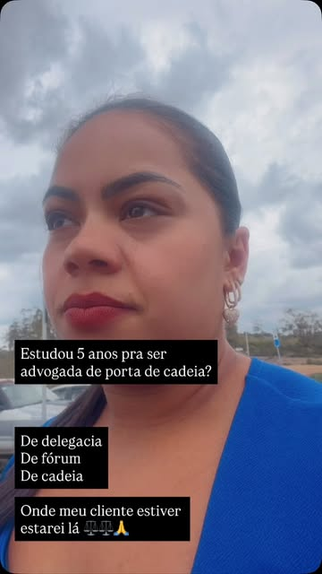

BIANCA MORANDI / ADVOCACIA CRIMINALCONHECIMENTO. PRESENÇA. ESCUTA.
Por trás de cada processo
Uma história.
Uma pessoa.
Seus direitos.
Advocacia criminal com conhecimento jurídico e atenção à dimensão humana de cada demanda.
Conheça por onde começar ↘BMBianca Morandi
ADVOGADA CRIMINALISTA
ADVOGADA CRIMINALISTA
As pessoas, atenção.01 / BIANCA MORANDI
EXPLORE
01 / A PROFISSIONALConheça a Bianca ↗02 / RADAR CRIMINALAcompanhe as notícias ↗03 / CONTATOFale com a advogada ↗O que você
quer conhecer?
A advogada
Muito além dos processos,
existem pessoas.
Bianca Morandi é advogada com atuação na área criminal. Em seu perfil profissional, apresenta sua formação em Direito Penal e participação na Comissão de Direitos Carcerários.
Sua comunicação aproxima o Direito das pessoas e compartilha o cotidiano da advocacia, o estudo e a atenção às histórias que acompanham cada demanda.
- 01Pós-graduada em Direito Penal
- 02Atuação na área criminal
- 03Integrante da Comissão de Direitos Carcerários
Área de atuação
Advocacia Criminal.
Informação profissional organizada para facilitar o contato e a compreensão da área de atuação.
ÁREA DE ATUAÇÃOCriminal.
Conhecer o contexto.
Compreender a demanda.
Avaliar cada situação.
Direito Penal e atenção individual.
O Direito Penal é o eixo da atuação divulgada por Bianca Morandi. O primeiro contato permite apresentar a demanda e verificar a possibilidade de atendimento profissional.
As particularidades de cada situação devem ser avaliadas individualmente. Este espaço apresenta a profissional e seus canais de contato.
Contato pelo WhatsApp ↗Radar Criminal · Fontes oficiais
O Direito em
movimento.
Notícias do Superior Tribunal de Justiça sobre a área criminal. Acompanhe os títulos e acesse as matérias completas no portal oficial.
Consultando fonte oficial…
Nenhuma notícia encontrada para este filtro. Tente outro tema ou termo.
Títulos publicados pelo STJ. A leitura completa acontece no portal oficial.Todas as notícias do STJ ↗
Em vídeo
Presença que
também se vê.
Registros e mensagens do perfil profissional de Bianca Morandi. Selecione um vídeo para assistir no Instagram.

REEL / INSTAGRAM ↗26 OUTUBRO 2026
O cotidiano da advocacia criminal.
Acompanhe o registro publicado pela Bianca em seu perfil profissional.
Assistir no Instagram ↗ REEL / INSTAGRAM ↗
REEL / INSTAGRAM ↗22 OUTUBRO 2026
Defesa com seriedade.
Uma mensagem sobre sua atuação, compartilhada no perfil profissional.
Assistir no Instagram ↗Biblioteca do perfil
Perspectivas.
Para conhecer de perto.
Uma seleção da comunicação profissional da Bianca. Explore por tema e visualize cada publicação sem sair do site.
Uma pessoa por trás de cada história.
Identidade e atuação profissional.
Imagens do perfil @biancamorandi.advogada. Títulos e apresentações são resumos editoriais para esta demonstração.
Informações de contato
O primeiro passo
é uma conversa.
Encontre o canal profissional e saiba como utilizar esta página.
Como entrar em contato?
Utilize o WhatsApp profissional (32) 99812-0862 ou o perfil @biancamorandi.advogada no Instagram. Os links desta prévia direcionam para esses canais.
Qual área de atuação é apresentada?
A área divulgada no perfil profissional é a criminal, com pós-graduação em Direito Penal.
O contato confirma um agendamento?
Não. Data, horário, formato e condições do atendimento precisam ser combinados diretamente com a profissional.
Esta página substitui uma consulta?
Não. O conteúdo é uma apresentação profissional e não constitui avaliação jurídica de uma situação individual.
Contato profissional
Atenção à sua história.
Respeito aos seus direitos.
Para apresentar uma demanda ou solicitar informações sobre atendimento, utilize o canal profissional divulgado nas publicações.
WHATSAPP PROFISSIONAL(32) 99812-0862Conversar pelo WhatsApp ↗Instagram · @biancamorandi.advogada ↗
O atendimento e suas condições serão confirmados diretamente com a profissional.